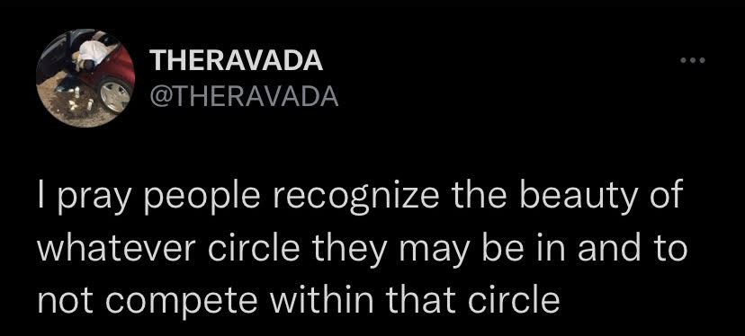

an exploration of a contemporary new york based musical movement that directly builds on black radical tradition
an overview: not a rap group
"[T]here needs to be less of the “cool guy-ness” and more of having an open space where artists can talk, not even collaborate, just talk or ask for advice. That’s kind of what we’ve been doing with Mike and Slums. Keep it like building a family, that type of thing. There needs to be more community, and less of separatism, which I feel like is an African thing, but that’s my whole other thing — African community sh*t versus European mindset [...]."
-slauson malone
In late 2016, a Bronx collective known as [sLUms], comprised of roomates MIKE, Ade Hakim (formerly Sixpress), Jodi.10k (formerly Jazz Jodi), King Carter, Darryl Johnson, began to release a series of projects that would send waves throughout underground hip hop in the coming years, redefining the sound of New York. It most notably achieved mainstream attention with the release of Some Rap Songs by Earl Sweatshirt in 2018, and since then dozens of artists have collaborated and contributed. Their production and delivery is largely directly inspired by the likes of MF DOOM, J Dilla, and Madlib, with a delivery that could be described as spoken-word poetry placed over spliced, distorted, and repetitive dreary lo-fidelity loops and songs that similarly defy conventional song structure. The content itself draws on such influences as well as the poetry of Bukowski, etc. While this movement was a breath of fresh air in many ways, it built off of the work of artists such as Billy Woods, Quelle Chris, Open Mike Eagle, and Blu, to establish a contemporary sound that is as adjacent to them as it is to that of minimal trap and “coke rap”. But even with all these descriptors, it is difficult to denote what makes an artist or their works a part of this movement, or if it is even a movement at all. There is a brief documentary that was released on the earliest days of [sLUms] that serves as the best available entry-point into understanding its foundational mindset.
[sLUms] really started off as a group of friends from different backgrounds and sh*t. At the time we was all in crazy situations, at least at the times because we was young. We really just helped each other out. It was six homies — me, Ruben, Darryl, King, Adé and the homie Mason and we would really just create sh*t. I feel like we introduced a new energy. Low-key just on some love sh*t in the city — I’m not gonna cap, before that I feel like everybody was tryna be a cool guy. It was weird. We low-key made n*ggas loosen up in the hood.
-MIKE
As MIKE put it, music is to him a way to express and liberate himself, make him feel like an individual. But at the same time, unlike a conventional band structure, the purpose of it isn’t to rise to stardom or gain accolades and fame, it is to exist in a communal space together, support one another, and work through one's current reality through creative output. As such before they even started recording any material, they started out by boarding subways and freestyling, as a medium of raw collective expression that served as a cathartic way of just being heard. To put it bluntly, the thing they’re all struggling with is “being broke and black in America” trying to “make something out of nothing” and it's that shared experience which informs and shapes its themes, sound, and offers a sense of purpose. The messaging of artists in the surrounding circle very much falls in line with that, as at the initial stages, they were often friends or people interested in connecting on a person to person level. As it initially lacked clear structure, and establishing a genre wasn’t the main goal of working together, there is no official name for what this developed into. Initially many referred to the sound as that of [sLUms] & associates, but as more artists not directly connected to the originators joined, many searched for a broader term. With Earl’s influence shining a bright spotlight on the movement, many online “joined” without ever meeting any of the initiators, simply being inspired by them.
"I describe it ['a cadre of artists that includes Noname, Earl Sweatshirt, MIKE, Pink Siifu, and others'] as a special moment in the genre, and [Mavi] corrects me. 'It’s not a moment, it’s a corner. It’s a state, not a time,' he says. 'It’s a place that we occupy that’s been occupied before by [Black] artists who carry out this mission.' A mission of love, respect for the art, and liberation. A mission that focuses on community first rather than any single individual."
"the roles don’t change, only the actors."
-MAVI
And so a label that is frequently used online is lo-ny renaissance, but even this felt limiting to some, with artist Big Flowers commenting his problem with such a label, using terior in relation to wine to point at how artists contributing outside of New York could not simply replicate a sound based specifically in such an environment. City culture is a huge component of defining the general aesthetic, with a majority of the artists living there, and doing free performances on trains, shooting music videos prominently featuring it, and using the proximity it offers to easily work together. Additionally the economic discrepancy and large number of people can create a kafka-esque sense of dissonance. There is also a certain edge of disillusionment present in much of the music that comes chiefly following the tragedy of 9/11, housing crash of 2008, and most recently, the inauguration of Donald Trump in addition to what many have described as an ongoing daily fight for survival and wellbeing. This shift is more than key events, it’s felt in a day to day moment to moment sense, where the oppressive vilification and bleakness of the world as Adé Hakim points out, is magnified by the speed at which everything now moves in the era of the internet news cycle. This same cycle has pushed the violent actions by the police against black people to the fore-front of national discourse. And so while certain aspects are unique to NYC, it's safe to say others are felt on a broader scale. And so newer classifications that account for this attempt to broaden similarly. Labels such as “drumless” and “stained sweatpants rap” push this to its furthest extent, neither being meant to be taken literally or limit who is eligible, but try to encapsulate a certain mood that is generally applicable. But in searching for a label that isn’t one, the problem with the very idea of there being one is revealed. Even though there are shared themes, musically, as will be demonstrated there is no definitive line that can be drawn, something that is intangible beyond a larger sense of kinship. As such a thing can transend time, MAVI considers his music the blues, continuing and adding to an artform that was created for much the same purpose.
Form is secondary to mood.


a loose contextual timeline
18th Century
On plantations in the south, spirituals emerge as a form of expression from those who are enslaved. It is considered by many to be the first true American art form. Itt primarily envolves a group singing tales of freedom, acting as a collective effort to achieve mental freedom in lacking the physical.
1860s
At the tail end of chattel slavery in the U.S., a new form of art emerged with similar goal to that of spirituals. As time passed, the promised freedom, which for many ended up being wage slavery, lead to a general cynicism. What blues sought to do is not merely vent one's probelms, but simply report them
1920s
Jazz first came about in New Orleans. It gained rapid popularity in the US due to the invention of the radio. Jazz was built off of the blues, gospel, and slave songs, and Jazz grew to represent experimental expression in light of freedom and emancipation.
1960s
Funk evolved from jazz, R&B, gospel, and the blues. George Clinton and Parliament/Funkadelic pioneered a new sound based off of James Brown’s signature funk beat/rhythm.
1970s
Hip-Hop’s origin started in the Bronx when the movement was inspired mostly by funk. Early hip-hop included a DJ (live producer), MC (rapper), and the crowd/dancing style (break-dancing). Hip-hop stopped a lot of violence, turning physical conflict into artistic battles.
2010
Odd Future was a hip-hop group composed of Tyler, The Creator, Earl Sweatshirt, Mike G and a few others. Reminiscent of the Wu Tang Clan, the group gained cultural influence, bringing back Supreme and using the internet to their advantage. This group would set the foundational sound for the [slUMs] movement.
artists
the conclusion
A movement in particular that the [slUMs] mirrors is the negritude movement. [slUMs] is an artistic and poetic approach to creating change in the norms, stereotypes, and oppression relating to many’s experience being black in America. It is based on attempting to reach a positive definition of freedom through honest self expression and trying not to yield commercial appeal or inaccurate portrayals. [slUMs] has become enriched by not only the storied history it has as its incredible foundation, but also by the increased speed of information, widespread connection, and the diversity of influences that offers new depths and angles. It is hard to summarize the ethos of such a loosely connected group, but that is the point. This is not related solely to the black radical tradition, it is its own continuation into something new happening before us in real time.
This mirroring is a conscious effort: the artists involved actively learning from and being raised on the accomplishments of those who preceded them. For example, one idea that motivated Pink Siifu to rap was the similarity between rap and poetry. In an interview with the New York Times, Pink Siifu said in reference to hip hop in general: “I heard what they were saying, and I thought, ‘They’re just rapping poems!’ Then I was like, ‘Oh nah, I can rap my poems.’”Another example is that Gio Escobar describes his music as “a series of admiring deflections into art” per pitchfork. His band member of Standing On The Corner, Slauson Malone, said his music is “about the freeness to be expressive in ways that you can’t do when you’re being constricted by yourself or anybody else.” In the same interview, he continues to pose a question: “How do we say Black Lives Matter without fucking chanting “Black Lives Matter!” in our music?”
This reminds us of Aime Cesaire and his philosophy of poetry being a means for revolution. All of these artists are rapping about their struggles with being an African-American man, and their poetry mirrors the poetry about revolution in France during the early-mid 20th century. Additionally, relating to Aime Cesaire, the freedom of expression poetry gives rappers’ voices leads to endless possibilities. Hip-hop songs from The Blacker the Berry by Kendrick Lamar to The Bigger Picture by Lil Baby, contribute to the meaning of the movement. The [slUMs] movement is a reincarnation of the negritude movement in the United States, and if an artist is rapping about their struggles with race in America, they are contributing to the movement whether it was intentional or not.
One specific theme within the movement, escapism, relates to Afro-surrealism and The Black Radical Tradition. Standing On The Corner’s album, Red Burns is built off a message to aliens, Akai Solo’s album Like Hajime is written from a spacecraft escaping capitalism, and Black Noi$e’s album, Oblivion, is literally written from Oblivion. All three of these projects took influence from Sun Ra, the Detroit techno artist who made outer space seem incredibly real through his music. These [slUMs] projects, however, use escapism in relation to realism, citing precise reasons for their escape. The message doesn’t need to be deciphered as it is presented in a blunt and painful delivery through the production, lyricism, and style of these albums.
With humbleness and without competition, or metrics for success, the movement becomes art in its purest form of communication, bluntly promoting a world in which black liberation is at the forefront.